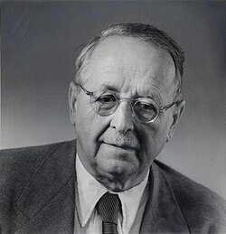

1885-1955
Hermann Weyl

Portrait: ETH Zürich, CC BY-SA 3.0, Wikimedia Commons.
Events (9)
- 1851Riemann surfaces
developer · Complex analysis
- 1874Lie theory (continuous transformation groups)
developer · Group & representation theory
- 1901Schur: polynomial representations of GL(n) and invariant theory
developer · Group & representation theory
- 1913Abstract Riemann surface (Weyl's manifold definition)
developer · Differential geometry
- 1916Affine connections (parallel transport, Weyl and Cartan)
developer · Differential geometry
- 1918Weyl's gauge theory (local scale invariance)
originator · Differential geometry
- 1927Group representations in quantum mechanics
developer · Algebra
- 1927Representations of compact and continuous groups (Schur, Weyl, Peter-Weyl)
developer · Functional & harmonic analysis
- 1985Symplectic topology
developer · Differential geometry